B1500A Excel 檢視器¶
繪製 B1500A 曲線並從中萃取 DC 參數。側邊欄 直流量測 (DC Measurement) → DC 分析 (DC Analysis)，頂端頁面選擇器設為 B1500A Excel 檢視器 (B1500A Excel Viewer)（另一個選項是 TLM 分析）。
檢視器只接受 .xlsx。取得檔案最快的方式是從
量測資料批次處理交接過來；上傳自己的 .xlsx 做法完全
相同。
進入頁面¶
交接完成後，頁面會顯示提示訊息，且收到的檔案已列在下方的選擇器中。先選 要檢視哪個上傳／接收的檔案，再選裡面的工作表（如果不只一個），最後選曲線 類型。
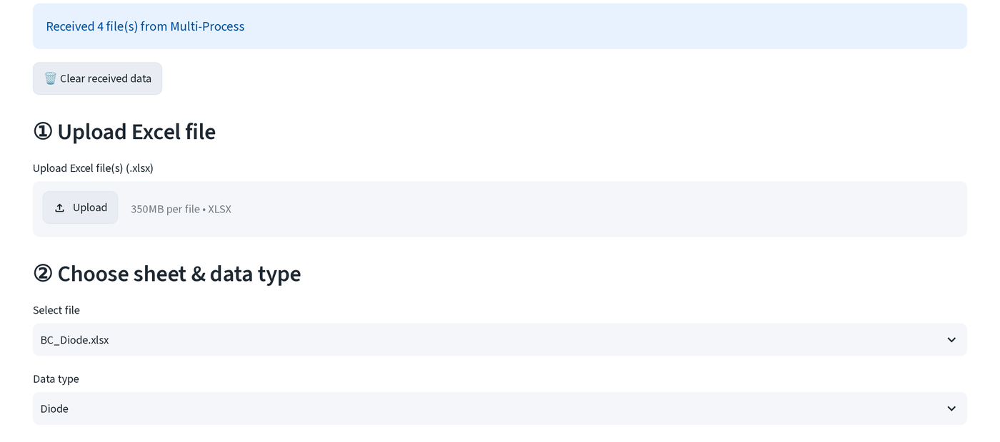
資料類型會依檔名自動判斷（BE/BC 為 Diode、Gummel、Family），但仍是一
個普通的下拉選單，猜錯時可自行更改。
曲線類型¶
BC / BE 二極體¶
以對數軸繪製 |I| 對掃描電壓的關係。η 窗口 (η window)，可輸入兩個數字
或在圖上拖曳選取，用來設定理想因子擬合所使用的電壓範圍。
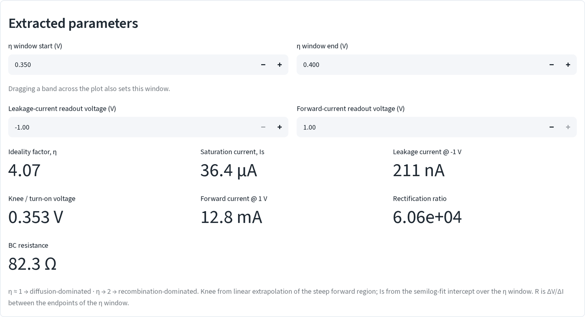
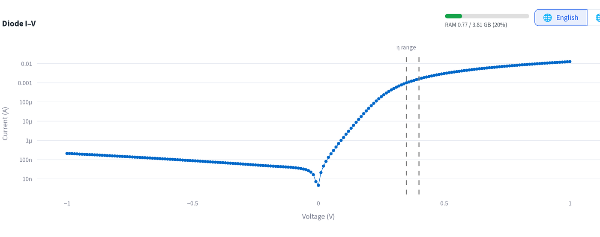
- 理想因子 η (Ideality factor, η)：η 窗口內
I對V的半對數擬合。 η ≈ 1 表示以擴散為主，η → 2 表示以復合為主。 - 飽和電流 Is (Saturation current, Is)：同一個擬合的 y 截距。
- 膝點 / 開啟電壓 (Knee / turn-on voltage)：將順向陡升區線性外插回
I = 0所得的電壓。 - BC/BE 電阻 (BC/BE resistance)：η 窗口兩端之間的弦電阻 ΔV/ΔI（依檔名出現的是 "bc" 還是 "be" 而標示）。
- 順向電流 @ V (Forward current @ V) / 洩漏電流 @ V (Leakage current @ V)：兩個讀值電壓是數值指標上方各自獨立的輸入欄位，可任意移動來讀取 曲線上的任何位置。
- 整流比 (Rectification ratio)：
+|V|處的順向電流除以-|V|處的 逆向電流，使用掃描兩端點量值中較小的一個。
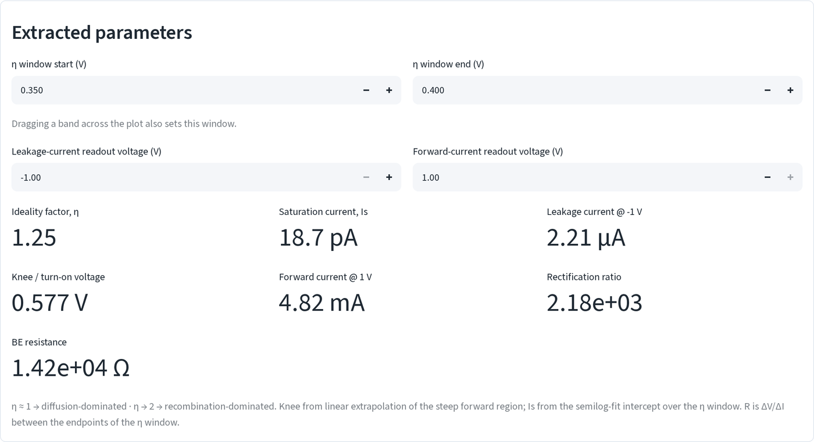
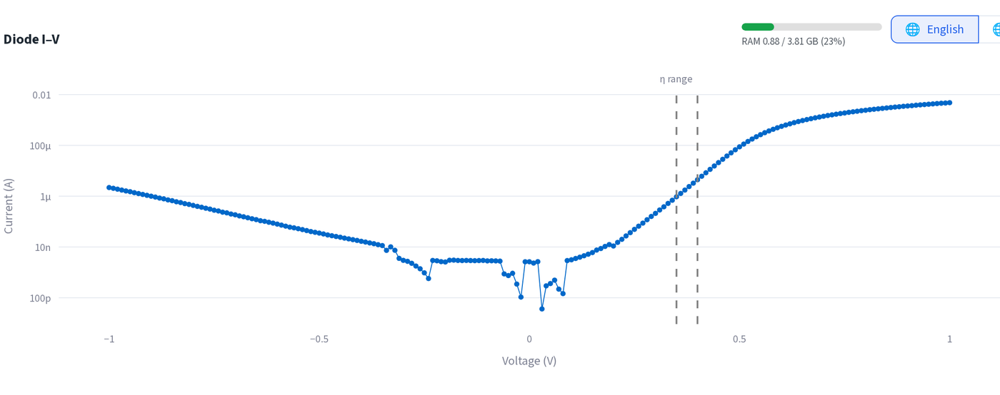
Gummel¶
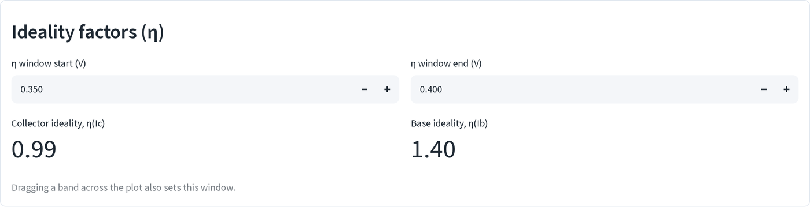
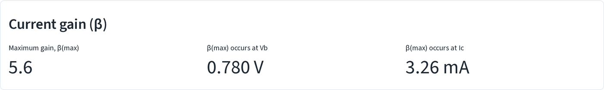
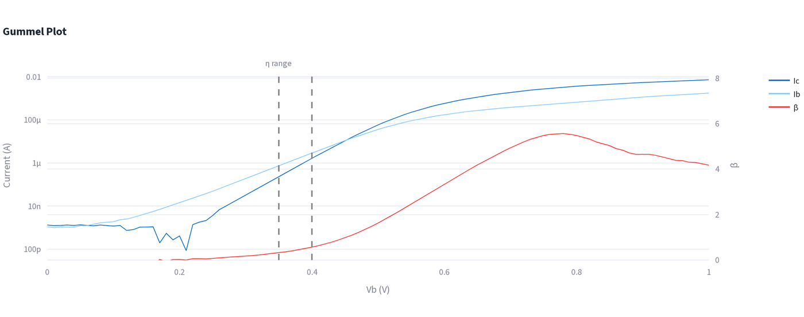
以共用的對數軸繪製 Ic 與 Ib 對 Vb 的關係，並在第二條線性軸上畫出 β = Ic/Ib。與二極體頁面相同的 η 窗口控制項，分別套用在 Ic 與 Ib 上：
- 集極理想因子 η(Ic) / 基極理想因子 η(Ib) (Collector / base ideality, η(Ic) / η(Ib))：與二極體頁面相同的半對數擬合方法，Ic 與 Ib 各自擬合一次。
- 最大增益 β(max) (Maximum gain, β(max))：整個掃描範圍中 Ic/Ib 的峰值， 以及發生峰值時對應的 Vb 與 Ic。
Ic-Vc 族群¶
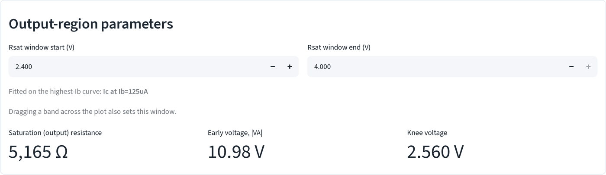
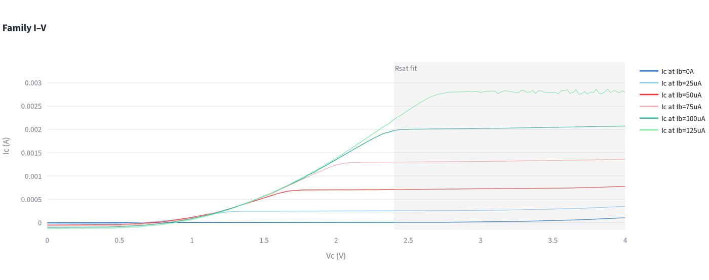
每個 Ib 步階畫一條 Ic 對 Vc 曲線。控制項與讀值：
- Rsat 窗口 (Rsat window)：一個 Vc 範圍（拖曳選取或輸入數字），只在 Ib 最高的那條曲線上做擬合。
- 飽和（輸出）電阻 (Saturation (output) resistance)：該窗口內 Ic 對 Vc
線性擬合的
1/斜率。 - 厄利電壓 |VA| (Early voltage, |VA|)：同一個擬合的 x 截距的絕對值。
- 膝點電壓 (Knee voltage)：Ic 首次達到其飽和值 90%（取掃描最上方 20% 的 Ic 平均值）時對應的 Vc。
滑鼠移到某條曲線上，會以提示框顯示該曲線自己的 DC 增益 β 與偏移電壓（Ic 零交叉點），下方兩個區塊則彙總圖上每一條曲線：
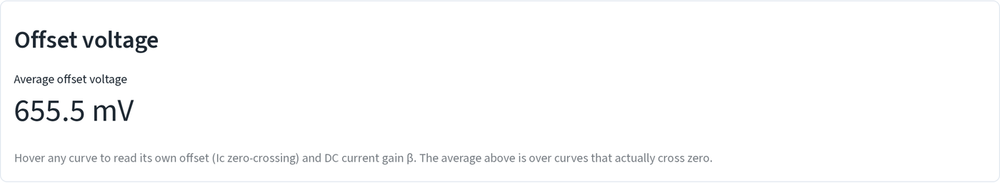
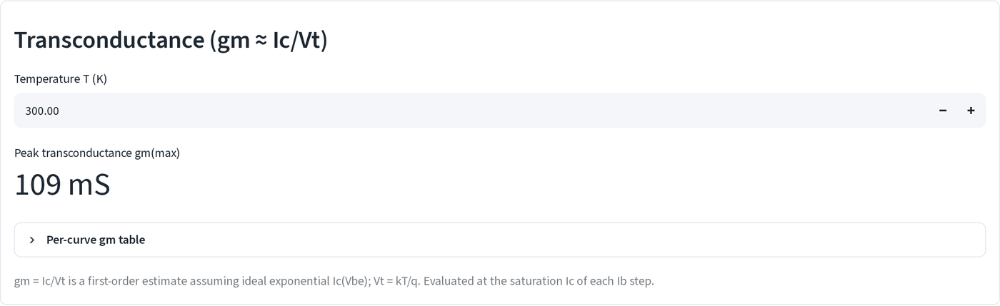
- 平均偏移電壓 (Average offset voltage)：實際有零交叉的曲線的 Ic 零 交叉點平均值。
- 最大轉導 gm(max) (Peak transconductance, gm(max))：
gm = Ic/Vt（Vt = 你設定的溫度下的 kT/q），在每條曲線的飽和 Ic 處計算；展開 各曲線 gm 表 (Per-curve gm table) 可看到每個步階的數字。
其他控制項¶
- 在任一張圖上拖曳選取會設定與上方數字輸入相同的窗口（η 窗口、Rsat 窗口），兩者互相連動。
- 上傳的檔案會在切換到 TLM 分析再切回來後保留，使用「先前上傳」提示旁的 清除 (Clear) 按鈕可移除它們，或用 🗑️ 清除接收的資料 (Clear received data) 移除交接資料。